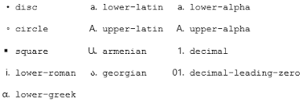

El tipo de estilo de lista especifica la apariencia del listado.valor inicial: disco/punto Se aplica a: elementos con 'display: list-item' valor heredado: Sí Porcentajes: n/a Medio: visual valor calculado: según se especificó
list-style-type: < std-list-style-name > | none | inherit ;
< std-list-style-name > un nombre de estilo de lista estándar: disc, circle, square, decimal, decimal-leading-zero, lower-roman, upper-roman, lower-greek, lower-latin, upper-latin, armenian, georgian, lower-alpha, upper-alpha
disc un disco. circle un círculo. square un cuadrado. decimal números decimales empezando con 1. decimal-leading-zero números decimales empezando eventualmente por ceros (por ejemplo: 01, 02, 03, ..., 98, 99). lower-roman números romanos en minúscula (i, ii, iii, iv, v, etc.). upper-roman números romanos en mayúscula (I, II, III, IV, V, etc.). lower-greek letras griegas en minúscula alfa/α, beta/β, gamma/γ, ... lower-latin letras ASCII en minúscula (a, b, c, ... z). upper-latin letras ASCII en mayúscula (A, B, C, ... Z). armenian numeración armenia tradicional (ayb/ayp, ben/pen, gim/keem, ...). georgian numeración georgiana tradicional (an, ban, gan, ..., he, tan, in, in-an, ...). lower-alpha es igual que lower-latin. upper-alpha es igual que upper-latin. none nada.
